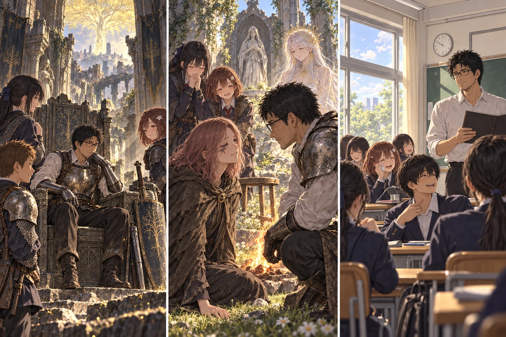
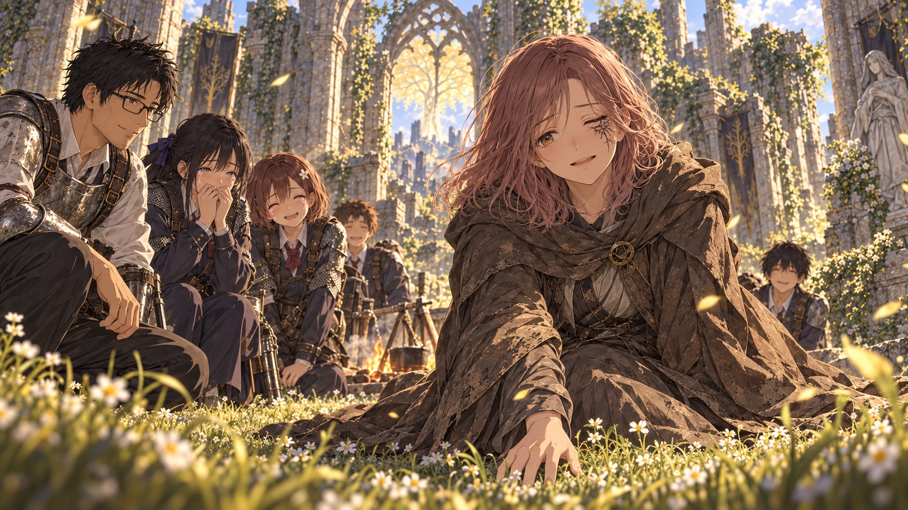

DAY98 / TURN1−110
三十三人目の返事。

「先生も」――「……はい」
【DAY98・六時／最後の朝】目が覚めると、鍋の底を木匙が擦る音がした。雨ではない。悲鳴でもない。私は横になったまま、一度だけ深く息を吸った。布の屋根の継ぎ目から、朝の光が差していた。
三十三人分の朝食を分ける。残りは三十二食。水汲みの二往復も、いつもと同じ既知の道だった。今日はルーンを稼ぎに行く者はいない。修理を急ぐ者もいない。それでも、誰かが食べる前に器を揃える仕事は、最後まで残った。
翼が、使わなかった救援の紙を帳面に挟んだ。明け方六時、連絡がなくても祝福を開く。昨夜、取消を確認した命令だった。「これ、捨てずに持っていきます」。先生が帰ってこなかった時のための紙を、先生のいる朝に畳む。その仕事も、無事に終わった。
出発の前に、もう一度人数を確かめた。先生一人、生徒三十二人。離脱中は零。新しい祝福を開く必要はない。結衣と澪は教会に残る二十人を確認し、蓮は私と一緒に行く十二人を呼んだ。
「みんなで、あそこへ行ければよかったんですけど」。花が言った。私は頷いた。けれど、訪れたことのない二十人まで飛べるようになったわけではない。帰るための最後の一歩で、これまで守ってきた道のりを、なかったことにはしない。
【七時／壊れかけのマリカ】十三人が、登録済みの祝福へ移動した。昨日と同じ場所なのに、戦いの音は戻ってこなかった。砕けた床。薄い灰。長い沈黙。その中心に、壊れた神の姿があった。
攻略サイト先読みを、一度だけ開いた。残る選択は、エルデンリングの修復。ほかの結末のための品は、持っていない。探しに行く必要も、もうない。私は表示を閉じた。
「これで、教会のみんなも」。葵が言った。「ああ。ここで剣を振った人だけの勝利じゃない」。蓮は何も言わず、少し後ろへ下がった。最後の決断を、私に任せる距離だった。
私は、マリカへ手を伸ばした。壊れたものを、元の位置へ戻す。失われた人も、起きてしまったことも、何もかも元どおりになる動作ではなかった。それでも、終わりかけていた世界に、続く形を与えることはできた。
【七時三十分／壊れかけの時代】光が、静かに継がれた。戦いの時のように、誰かを吹き飛ばす光ではなかった。視界の端に残っていた期限の文字が、一文字ずつ消えた。その下に、短い言葉が現れた。帰還条件、達成。
私は王座に座った。背中へ石の冷たさが伝わった。もっと大きな何かを感じるのだろうと思っていたのに、最初に思ったのは、皆も座れればいいのに、だった。
鎧には昨日の傷があった。剣も、盾も、新しく輝き直したわけではない。私はここまで来た格好のまま、一つの世界の王になった。
黄金樹の向こうに、まだ行ったことのない土地があった。私たちが倒さなかった敵、会わなかった人、解かなかった話が残っている。すべてを終わらせたのではない。すべてを知らなくても、この世界を消さずに済んだ。
【同時刻／エレの教会】澪の手元にも、帰還契約の達成だけが表示された。遠くの王座の様子や、先生の顔まで見えるわけではない。それでも、結衣が隣へ来て同じ文字を確かめると、澪は頷くことができた。
「終わったって」。誰に向けたのか分からない声で言った。洗った椀を運んでいた佑真が止まり、誠が壁の石から手を離した。歓声は、一度には上がらなかった。何人かが聞き直してから、教会の中を走るように広がった。
【八時／王が帰る場所】十三人は、安全な祝福から教会へ戻った。今度も自分で訪れた場所への移動だった。私は王冠を持ち帰らなかった。代わりに、全員の顔を見て言った。「帰れる」
結衣が、泣きながら笑った。陽太は大声を出してから、なぜか口を押さえた。夜襲で声を抑えた癖が残っているのかもしれない。誰も、それをからかわなかった。
ひとしきり声が落ち着いた頃、焚火のそばに白い光が立った。リュシアは、今朝も皆の前に現れた。「約束は、果たされました。三十三人、全員を帰せます」。女神は一人ずつ見てから、空いた椅子へ目を向けた。
【九時／一人の旅人へ】「もう一つ、お願いがある」。昨夜と同じことを、私はもう一度言った。女神は頷いた。「ここからは、彼女の返事を待ちましょう」。
私はメリナの名前を呼んだ。葵も、紬も続いた。あの釜まで歩いた者だけではなかった。円卓から持ち帰った話を聞き、戻ってくる人を待っていた者も、火の周りへ集まった。誰かの代わりになるためではない。一人分の返事を、聞くためだった。
【事前条件による判定：六・六＋三＝十五】世界の境界が安定したことと、本人を知る同行者の呼びかけ。その支えのもと、一度だけ行った試みは、声の届く先を捉えた。過去を巻き戻す力でも、記憶から似た誰かを作る力でもなかった。
「……あなたたちなのね」。声がした。薄い光の向こうに、あの旅装が見えた。けれど、リュシアはまだ手を差し伸べなかった。「ここへ戻ることを、望みますか。果たした使命を、もう一度背負わせるための呼び声ではありません」
メリナは、しばらく黙っていた。私は何か言いたくなったが、待った。助けたのだからこうしてほしいと、帰る先まで決めてしまっては、本人に聞いたことにならない。
「私が進めたのは、あそこまでだった」。メリナの声は静かだった。「その先へ、あなたたちが行ってくれたのね」。彼女は燃える樹の記憶から目を上げるように、こちらを見た。「……今度は、行く場所を自分で選んでみたい。この世界を、もう少し歩いてみたい」
女神が手を伸ばした。風が火の周りを巡り、私たちは一歩だけ場所を空けた。光の中から落ちた手が、草に触れた。草が、その重さで曲がった。

一人の旅人へ、おかえりを。メリナは膝をついていた。透明ではなかった。肩がゆっくり上下し、指が土を掴んでいる。私は前へしゃがんだ。触れて確かめるより先に、顔を見たかった。
「おかえり」。それだけ言うと、紬がとうとう泣いた。メリナは驚いた顔で紬を見て、それから、少し困ったように笑った。「……ただいま」。どこかで決められた使命の言葉ではなかった。
あの別れは消えない。あの人が火にならなければ、私たちは先へ行けなかった。その先へ進み、終わらせてから、ようやく別の朝で会えた。私は、それを、なかったことにするための再会とは思わなかった。
【九時二十分／違う行き先】「一緒には、来ない？」。葵が聞いた。メリナは少し考えてから頷いた。「あなたたちには、帰る場所があるでしょう。私は、ここに残る。今の私がどこへ歩けるのか、自分で見てみたい」
寂しくないと言えば嘘になる。それでも、戻ってきたばかりの人に、また私たちの道を歩かせる必要はなかった。私は教会の外を指した。「雨を避けたい時は、ここへ。屋根は、これからだけど」。メリナが、欠けた天井を見上げて笑った。
カーレが、昨夜の帳面を持ってきた。金は、もう受け取っている。今日は同じ金をもう一度渡したりはしない。残った食料、水、皆で使った鍋や桶の置き場所を伝えた。材木も職人も、まだ揃ってはいない。その仕事は、ここで続いていく。
花と美咲は、最後に軍馬を見に行った。段階を飛ばして乗って帰るようなことはしない。花の掌へ、馬が鼻先を寄せた。「元気でね」。カーレは草地を見て、日々の様子は気にかけると言った。メリナも、旅の途中で立ち寄るつもりだと答えた。馬は誰かの景品にはならず、ここに残った。
誠が一度、低い壁の石を押した。動かない。楓はそれを見て、頷いた。帰ったあとも、ここを使う人がいる。二人はそれ以上手を加えず、皆の方へ戻った。
【九時四十分／荷物の重さ】リュシアは、帰る先について説明した。元の世界では、私たちが姿を消してから、ほとんど時間は経っていないという。ただし、こちらで過ごした九十八日の記憶は、夢のように消えてしまうものではない。
「現地で身につけた力と品は、冒険の記録とともに境界へ預けられます。帰る世界で、そのまま術や武器を使うことにはなりません」。直人が大竜爪を見て、大地は黄金のハルバードの柄を一度撫でた。捨てるのではない。持ち主と、歩いた道を記したまま、置いて帰るのだ。
颯は指笛を掌に乗せてから、静かに預けた。澪の帳面と、皆が書いた紙は手元に残った。服は、出発した時のものへ戻るという。けれど颯の襟の下の傷まで、勝手に消すことにはならなかった。生きて戻った記録も、忘れないでほしい言葉も、そのままだった。
「次の世界へ行く門ではありません」。女神は言った。「今日は、帰るための道です」。誰かが、よかった、と息を吐いた。蓮が小さく笑った。「次の攻略会議、今日は休みですね」。私も笑った。「しばらく休みにしよう」
三十三人が揃った。カーレは手を上げ、メリナは火のそばで立っていた。私は最後に、二人の向こうの教会を見た。最初に逃げ込んだ廃墟は、もう、ただの廃墟ではなかった。
【十時相当／帰還】扉のような光を、皆が通った。私が最後に足を入れた時も、背後ではまだ鍋の火が燃えていた。その音が消えるまで、振り返らずに聞いた。
【元の世界／教室】椅子の脚が床を擦った。窓があり、天井があり、黒板があった。見慣れたはずのものが、一つずつ、妙にはっきりと目に入った。誰かの鞄から、筆箱が落ちた。
陽太が反射的に腰へ手をやり、剣がないことに気づいた。健太は、盾を置く場所を探すように机の横を見た。花は窓の外を見てから、両手で顔を覆った。そこに見えるのは、巨大な黄金樹ではなかった。
「……水道、ある」。真央が言った。何人かが笑った。笑いながら泣いている者もいた。私は教卓へ手をついた。膝から力が抜けそうだった。
頑張ったことを全部説明する言葉は、まだ見つからない。明日も普通に眠れるのか、学校の一日を前と同じように過ごせるのかも、分からない。帰ってきたからといって、すぐに平気な顔をする必要はない。
私は、教卓にあった出席簿を開いた。「まず、出席を取ります」。今さらですか、と誰かが言った。それでも、誰もやめてほしいとは言わなかった。
一人ずつ、名前を呼ぶ。大きな返事。鼻をすすってからの返事。笑い混じりの返事。颯の名前を呼ぶと、少し間を置いて、はっきりした「はい」が返ってきた。私は印をつけた。
最後の名前まで呼び終える。三十二人。そこで結衣が手を上げた。「先生も」。私は顔を上げた。皆がこちらを見ていた。
「……はい」。自分の返事に、自分で少し笑ってしまった。三十三人。今度こそ、帰ってきた人数だった。
【狭間の地／その後の朝】教会では、カーレが帳面を開いていた。屋根に必要な物の名を、ひとつずつ書き足している。草地では、軍馬が朝の風へ耳を向けた。メリナは旅装の紐を結び、道の先を見た。
今度の足には、決められた釜への道だけがあるのではなかった。行き先を選び、立ち止まり、また歩くことができた。教会の火へ一度だけ手をかざしてから、彼女はその朝へ踏み出した。
私たちの冒険は、終わった。私たちが帰ったあとにも、あの世界の一日は始まっていた。
END CREDITSこの旅を、もう一度。
DAY1からの記憶と、三十三人の名前。
そして、物語のあとに残る小さな余韻。
エンドロールを再生する ▶約6分・音なし・一時停止と速度変更に対応
今回の判定・処理記録
| 判定 | 出目 | 補正 | 合計 |
|---|
| 結末成立後、メリナ本人へ届き、この世界へ迎える試み | 6+6 | 3 | 15 |
結末・帰還の条件 · 抽選結果と処理記録